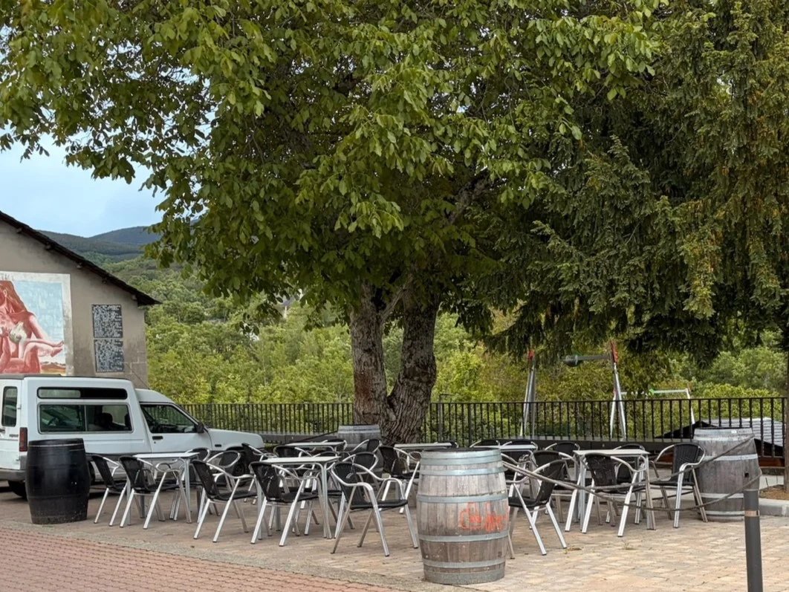
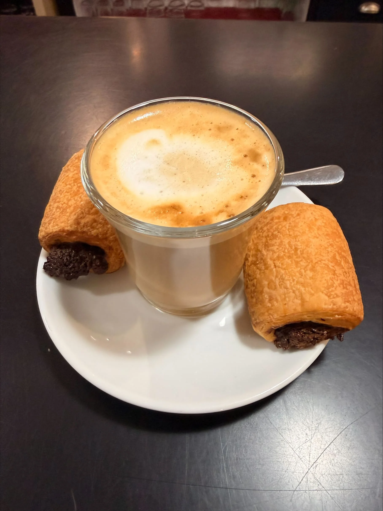
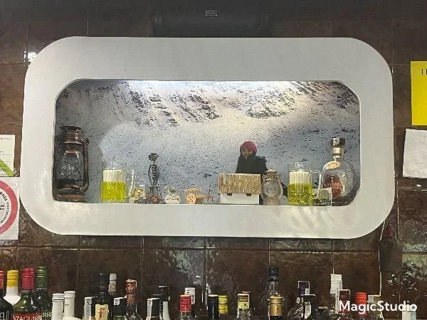

Tradición y Calidez en Páramo del Sil

Ubicada frente al parque Álvarez Carballo, es el rincón perfecto para relajarse, mientras los niños juegan en el parque.

Nuestros cafés y bollería artesanal son el motor de cada mañana. No dejes de probar nuestro clásico rosco.

Un ambiente acogedor donde Jose y Ana te harán sentir como en casa, y podrás disfrutar tu estancia.
En cumplimiento con el artículo 10 de la Ley 34/2002, de 11 de julio, de Servicios de la Sociedad de la Información y del Comercio Electrónico (LSSI-CE), se facilitan los siguientes datos del titular del sitio web:
Titular: Ana Gancedo Fernández
Denominación Comercial: Bar El Candil
NIF: 71523831H
Domicilio Social: Calle la Vega 20, 24470 Páramo del Sil, León (España)
Email de contacto: elcandilparamodelsil@gmail.com
Teléfono de contacto: 639212610
El titular, Ana Gancedo Fernández (Bar El Candil), es propietario de todos los derechos de propiedad intelectual e industrial de este sitio web, así como de los elementos contenidos en el mismo (imágenes, fotografías, logotipos, textos, estructura y diseño arquitectónico de la web, etc.). Queda expresamente prohibida la reproducción, distribución o modificación de la totalidad o parte de los contenidos de esta página con fines comerciales sin autorización previa por escrito.
El acceso a este portal atribuye la condición de usuario, quien se compromete a hacer un uso adecuado de los contenidos de conformidad con la ley. El titular no se hace responsable de los daños y perjuicios que pudieran ocasionar errores u omisiones en los contenidos, o la falta de disponibilidad temporal del portal por mantenimientos técnicos.
En el caso de que se incluuyan enlaces hacia otros sitios de Internet (como mapas interactivos de Google Maps o plataformas de Wikiloc), el titular no ejercerá ningún tipo de control sobre dichos sitios ni asumirá responsabilidad alguna por sus contenidos, funcionamiento o políticas de privacidad externas.
La relación entre el titular del sitio web y el usuario se regirá por la normativa española vigente. Para la resolución de cualquier controversia, conflicto o reclamación que pudiera surgir en relación con el uso de este sitio web, ambas partes acuerdan someterse expresamente a la jurisdicción de los Juzgados y Tribunales de Ponferrada (León), renunciando a cualquier otro fuero que pudiera corresponderles.
Las presentes condiciones regulan el acceso y uso de la web oficial de Bar El Candil. Al navegar por este sitio, el usuario acepta de manera íntegra estas disposiciones, orientadas a informar sobre los servicios, localización y esencia de nuestro establecimiento en Páramo del Sil.
El usuario se compromete a hacer un uso lícito y responsable de los contenidos expuestos en este portal. Queda prohibido utilizar la información de contacto para el envío de publicidad no solicitada (SPAM), dañar la infraestructura tecnológica de la web o reproducir imágenes de nuestras instalaciones sin autorización por escrito.
El titular realiza los máximos esfuerzos para garantizar que la información de la web sea correcta. No obstante, no se responsabiliza de interrupciones puntuales del servicio por mantenimiento técnico ni de cambios de última hora en la oferta de productos. Tampoco asume responsabilidad sobre el funcionamiento de herramientas externas enlazadas (como Google Maps o Wikiloc).
La información contenida en esta web refleja el ambiente familiar de nuestro local físico. Recordamos que, tanto en nuestra terraza frente al parque infantil como en el interior, se aplican estrictamente las normativas vigentes de hostelería de Castilla y León, reservándose el derecho de admisión para garantizar la tranquilidad y seguridad de todos los clientes.
La dirección del establecimiento se reserva la facultad de modificar o actualizar estas Condiciones de Uso en cualquier momento para adaptarlas a novedades legislativas o a cambios en el propio funcionamiento del bar.
| Responsable | Ana Gancedo Fernández (NIF: 71523831H) |
| Nombre Comercial | Bar El Candil |
| Finalidad | Garantizar las funciones técnicas esenciales del sitio web y permitir herramientas interactivas (mapas). |
| Legitimación | Consentimiento explícito del usuario al parametrizar sus opciones de navegación. |
| Destinatarios | No se ceden datos personales a terceros. Google y Wikiloc procesan datos técnicos según sus respectivas políticas. |
| Derechos | Acceso, rectificación y supresión de datos revocando o eliminando las cookies en el navegador. |
El responsable legal del tratamiento de los datos de esta web es Ana Gancedo Fernández, con NIF 71523831H, titular de la marca comercial Bar El Candil y con domicilio físico situado en la Calle la Vega 20, 24470 Páramo del Sil, León (España).
Este sitio web es de carácter estrictamente informativo y no dispone de formularios de registro, contacto informatizado ni pasarelas de pago. Únicamente se procesan datos técnicos automatizados y anónimos (como cookies de sesión) con el fin de garantizar una correcta visualización estructural.
Se integran herramientas de mapas interactivos como Google Maps y Wikiloc para facilitar la localización del establecimiento y sugerir rutas de senderismo. Al interactuar con dichos elementos, estos proveedores externos pueden recopilar información técnica (como la dirección IP). Le recomendamos revisar las políticas de privacidad de Google y Wikiloc.
Este sitio no almacena historiales de usuarios ni crea perfiles comerciales automáticos. Usted mantiene todos sus derechos conforme al RGPD y puede revocar sus consentimientos en cualquier momento eliminando el historial de cookies guardado desde los ajustes de privacidad de su navegador web.
Utilizamos cookies propias y de terceros para que tu experiencia en nuestra web sea óptima y para habilitar herramientas interactivas (mapas y rutas). Puedes aceptar todas las cookies, rechazarlas o configurar tus preferencias de forma detallada.
| Responsable | Ana Gancedo Fernández |
| Nombre Comercial | El Candil |
| Finalidad | Garantizar el funcionamiento técnico del sitio web y permitir la visualización de herramientas interactivas externas (como el mapa de ubicación y mapas de rutas). |
| Gestión | Puede marcar sus preferencias a continuación en el Panel de Configuración antes de guardar su elección. |
Esenciales para que la web funcione de manera correcta (recordar si has aceptado o rechazado las cookies, navegación básica, seguridad). No se pueden desactivar.
Necesarias para habilitar herramientas interactivas externas en la web, tales como el mapa de Google Maps del footer y los mapas de rutas proporcionados por Wikiloc.
Utilizadas para recordar opciones de visualización del usuario y mantener la persistencia de elementos estéticos de la interfaz.
| Identificador | Proveedor | Finalidad | Duración |
|---|---|---|---|
| candil_cookies_decision cookie_analytics_allowed cookie_prefs_allowed |
Propio | [Técnica] Almacenar de forma local el estado de consentimiento de privacidad seleccionado por el visitante para evitar que el banner de advertencia vuelva a desplegarse de manera intrusiva en las siguientes sesiones de navegación dentro del sitio web. | 1 año |
| _ga / _gid AWSELB / JSESSIONID |
Wikiloc | [Terceros] Cookies técnicas, analíticas y de balanceo de carga requeridas externamente por el proveedor de mapas Wikiloc. Permiten el renderizado correcto, la carga fluida de las rutas de senderismo en el mapa interactivo y la recopilación de estadísticas agregadas de uso. | Sesión a 2 años |
| NID / AEC / /_Secure-ENID | [Terceros] Cookies vinculadas a la inserción del mapa interactivo de Google Maps en el pie de página. Se utilizan para recordar configuraciones del usuario (como el nivel de zoom o idioma) y prevenir actividades fraudulentas para garantizar la seguridad del elemento embebido. | 6 meses |
Usted puede modificar o retirar sus consentimientos directamente desde los selectores de este panel en cualquier momento. Asimismo, la práctica totalidad de navegadores del mercado permiten bloquear, restringir o eliminar de raíz el histórico de cookies desde sus apartados de Configuración de Seguridad o Privacidad.
Para ampliar detalles sobre el tratamiento general de su información personal, acceda a nuestra Política de Privacidad o contacte mediante: elcandilparamodelsil@gmail.com.